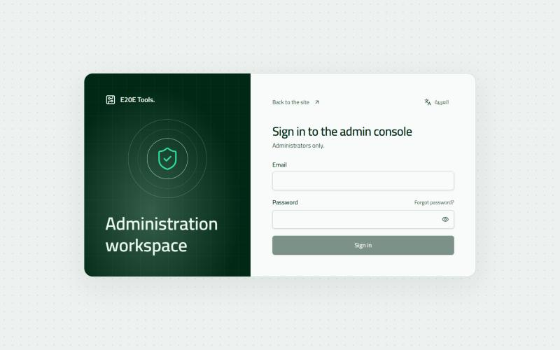

تشغيل EA-Hub على Google Cloud Run¶
تشغّل خدمة Cloud Run حاوية EA-Hub مع HTTPS تلقائي ودون خوادم تديرها بنفسك. على Google Cloud:
| جزء EA-Hub | خدمة Google Cloud |
|---|---|
| تطبيق الويب وHTTPS | خدمة Cloud Run |
| قاعدة البيانات | Cloud SQL for PostgreSQL 16 عبر عنوان IP خاص |
الملفات المرفوعة (/data/storage) |
حاوية Cloud Storage مربوطة كقرص |
| الأسرار | Secret Manager |
| المهام اليومية | Cloud Scheduler يستدعي نقاط المهام في التطبيق |
| الصورة | Artifact Registry |
| النسخ الاحتياطية | نسخ Cloud SQL التلقائية، وإصدارات الكائنات في الحاوية |
النسخة الإنجليزية: en/deploy-google-cloud-run.md
الحالة: تتبع هذه الخطوات أوامر
gcloudالموثقة. الحاوية نفسها، ووضع المالك لـ PostgreSQL المُدارة، وخيارMIGRATE_ON_START، كلها مختبرة في CI على PostgreSQL 16 عادية. لكن Google Cloud نفسها لم تُختبر من البداية إلى النهاية بعد.تفضّل Kubernetes؟ استخدم GKE مع الـ Helm chart كما في helm.md.
أسرع: قالب جاهز ينشئ كل ذلك بخطوة واحدة، انظر deploy/cloud. أما هذا الدليل فيشرح كل جزء لمن يريد البناء يدوياً أو التعديل.
1. المتطلبات¶
الموارد والأحجام¶
| المورد | الحجم المبدئي |
|---|---|
| خدمة Cloud Run | 1 vCPU و2 GiB، نسخة واحدة على الأقل و3 على الأكثر، مع تخصيص المعالج دائماً |
| Cloud SQL | db-custom-1-3840 (1 vCPU و3.75 GB)، أو db-g1-small للتجربة، و10 GB SSD، وPostgreSQL 16، بعنوان IP خاص |
| Cloud Storage | حاوية إقليمية واحدة في المنطقة نفسها |
| Cloud Scheduler | 3 مهام |
التكلفة التقريبية بهذه الأحجام: بين 50 و80 دولاراً شهرياً.
لماذا نسخة واحدة على الأقل مع تخصيص المعالج دائماً؟ المحادثة المباشرة تُبقي اتصال LISTEN مفتوحاً مع القاعدة، وبعض المهام تعمل في الخلفية بعد إرسال الرد. كلاهما يتوقف إن خفّض Cloud Run المعالج بين الطلبات.
الأدوات والصلاحيات¶
| المطلوب | التفاصيل |
|---|---|
| مشروع Google Cloud مع الفوترة | الأدوار: Cloud Run Admin وCloud SQL Admin وStorage Admin وSecret Manager Admin وArtifact Registry Admin وCloud Scheduler Admin وCompute Network Admin وService Account User |
أداة gcloud |
أحدث إصدار، مع gcloud auth login && gcloud config set project <PROJECT> |
| تفعيل الواجهات | gcloud services enable run.googleapis.com sqladmin.googleapis.com artifactregistry.googleapis.com secretmanager.googleapis.com cloudscheduler.googleapis.com servicenetworking.googleapis.com cloudbuild.googleapis.com |
| الكود أو الصورة | يسحب Cloud Run الصور من Artifact Registry (أو Docker Hub) فقط، لذلك تبني الخطوة 3 الصورة هناك |
| نطاق خاص (اختياري) | لاستخدام hub.example.com بدل عنوان *.run.app |
2. المتغيرات¶
PROJECT=$(gcloud config get-value project); REGION=europe-west1
SQL=ea-hub-sql; DB_PASS=$(openssl rand -hex 24)
BUCKET=$PROJECT-ea-hub-uploads
AR=$REGION-docker.pkg.dev/$PROJECT/ea-hub
SA=ea-hub-run@$PROJECT.iam.gserviceaccount.com
3. ابنِ الصورة في Artifact Registry¶
git clone https://github.com/E20E-Tools/ea-hub-selfhost.git && cd ea-hub-selfhost
gcloud artifacts repositories create ea-hub --repository-format=docker --location=$REGION
gcloud builds submit --tag $AR/ea-hub-selfhost:1.0.0 --machine-type=e2-highcpu-8 --timeout=40m .
4. شبكة خاصة لـ Cloud SQL (مرة واحدة لكل VPC)¶
gcloud compute addresses create google-managed-services-default \
--global --purpose=VPC_PEERING --prefix-length=16 --network=default
gcloud services vpc-peerings connect --service=servicenetworking.googleapis.com \
--ranges=google-managed-services-default --network=default
5. قاعدة البيانات (Cloud SQL PostgreSQL 16)¶
gcloud sql instances create $SQL --database-version=POSTGRES_16 --region=$REGION \
--tier=db-custom-1-3840 --storage-size=10 --network=default --no-assign-ip \
--backup-start-time=01:00
gcloud sql users set-password postgres --instance=$SQL --password="$DB_PASS"
gcloud sql databases create eahub --instance=$SQL
DB_IP=$(gcloud sql instances describe $SQL --format='value(ipAddresses[0].ipAddress)')
المستخدم postgres في Cloud SQL ليس superuser حقيقياً. يكتشف EA-Hub ذلك ويعمل في وضع المالك، فيتصل التطبيق باسم postgres الذي يملك كل جداوله.
6. حاوية الملفات المرفوعة¶
gcloud storage buckets create gs://$BUCKET --location=$REGION --uniform-bucket-level-access
gcloud storage buckets update gs://$BUCKET --versioning # keeps deleted/overwritten files recoverable
7. حساب الخدمة والأسرار¶
gcloud iam service-accounts create ea-hub-run
gcloud storage buckets add-iam-policy-binding gs://$BUCKET --member=serviceAccount:$SA --role=roles/storage.objectUser
printf %s "$DB_PASS" | gcloud secrets create ea-hub-db-password --data-file=-
openssl rand -hex 32 | tr -d '\n' | gcloud secrets create ea-hub-enc-key --data-file=- # never change it later
openssl rand -hex 24 | tr -d '\n' | gcloud secrets create ea-hub-cron-secret --data-file=-
printf %s 'choose-a-long-password' | gcloud secrets create ea-hub-admin-password --data-file=-
for S in ea-hub-db-password ea-hub-enc-key ea-hub-cron-secret ea-hub-admin-password; do
gcloud secrets add-iam-policy-binding $S --member=serviceAccount:$SA --role=roles/secretmanager.secretAccessor
done
8. انشر الخدمة¶
gcloud run deploy ea-hub --region=$REGION --image=$AR/ea-hub-selfhost:1.0.0 \
--service-account=$SA --port=3000 --cpu=1 --memory=2Gi \
--min-instances=1 --max-instances=3 --no-cpu-throttling --timeout=3600 \
--allow-unauthenticated \
--network=default --subnet=default --vpc-egress=private-ranges-only \
--add-volume=name=uploads,type=cloud-storage,bucket=$BUCKET,mount-options="uid=1000;gid=0;file-mode=664;dir-mode=775" \
--add-volume-mount=volume=uploads,mount-path=/data/storage \
--set-env-vars=APP_URL=https://placeholder.invalid,DB_HOST=$DB_IP,DB_NAME=eahub,DB_SSLMODE=require,APP_DB_USER=postgres,MIGRATE_ON_START=true,ADMIN_EMAIL=admin@yourcompany.com,TRUST_PROXY_HOPS=1 \
--set-secrets=APP_DB_PASSWORD=ea-hub-db-password:latest,APP_ENCRYPTION_KEY=ea-hub-enc-key:latest,CRON_SECRET=ea-hub-cron-secret:latest,ADMIN_PASSWORD=ea-hub-admin-password:latest
الآن اضبط العنوان الحقيقي. هذا يغيّر متغيرات البيئة فقط:
URL=$(gcloud run services describe ea-hub --region=$REGION --format='value(status.url)')
gcloud run services update ea-hub --region=$REGION --update-env-vars=APP_URL=$URL
echo $URL
تابع التشغيل الأول من Cloud Run ← ea-hub ← Logs، أو بالأمر:
gcloud beta run services logs tail ea-hub --region=$REGION
# [migrate] 91 migrations applied in total … owner mode … admin account created … Listening on: http://0.0.0.0:3000/
9. المهام المجدولة (Cloud Scheduler)¶
يستدعي Cloud Scheduler نقاط المهام في التطبيق مع سر المهام، كما كان يفعل Vercel Cron:
CRON=$(gcloud secrets versions access latest --secret=ea-hub-cron-secret)
for JOB in "newsletter|0 6 * * *" "daily-cleanup|30 2 * * *" "semantic-index|15 3 * * *"; do
NAME=${JOB%%|*}; SCHED=${JOB#*|}
gcloud scheduler jobs create http ea-hub-$NAME --location=$REGION --schedule="$SCHED" --time-zone=Etc/UTC \
--uri="$URL/api/public/jobs/$NAME" --http-method=GET \
--headers="Authorization=Bearer $CRON" --attempt-deadline=900s
done
gcloud scheduler jobs run ea-hub-daily-cleanup --location=$REGION # test one now
إن غيّرت سر المهام لاحقاً، فحدّث هذه المهام أيضاً.
10. نطاقك الخاص (اختياري)¶
استخدم Cloud Run ← Manage custom domains (ربط النطاقات، حيث يتوفر)، أو ضع أمام الخدمة Application Load Balancer خارجياً عاماً مع serverless NEG وشهادة تديرها Google. بعد ذلك:
gcloud run services update ea-hub --region=$REGION --update-env-vars=APP_URL=https://hub.example.com- حدّث عناوين URI في مهام Scheduler الثلاث.
- خلف موزّع حمل، اضبط
TRUST_PROXY_HOPS=2، لأن موزّع الحمل يضيف عنوانه إلىX-Forwarded-For.
11. افتح الموقع وسجّل الدخول¶
افتح $URL/admin:


بعد ذلك:
1. غيّر كلمة المرور من My account.
2. احذف ADMIN_PASSWORD بالأمر gcloud run services update ea-hub --region=$REGION --remove-secrets=ADMIN_PASSWORD.
12. التشغيل اليومي¶
| المهمة | الطريقة |
|---|---|
| الترقية | ابنِ وسماً جديداً (الخطوة 3)، ثم gcloud run deploy ea-hub --region=$REGION --image=$AR/ea-hub-selfhost:<new>. تُحدَّث القاعدة عند التشغيل |
| السجلات | Cloud Run ← Logs، أو Logs Explorer |
| نسخ قاعدة البيانات | نسخ يومية تلقائية، مع الاستعادة لأي لحظة: gcloud sql instances patch $SQL --enable-point-in-time-recovery |
| نسخ الملفات | إصدارات الكائنات (الخطوة 6)، واختيارياً حاوية ثانية عبر Storage Transfer |
| التوسع | --max-instances. تتشارك النسخ الحاوية والقاعدة |
| الإزالة | احذف الخدمة ومهام Scheduler وقاعدة Cloud SQL والحاوية والأسرار ومستودع Artifact Registry |
حل المشكلات¶
| العَرَض | الحل |
|---|---|
connect ETIMEDOUT عند الاتصال بالقاعدة |
الخروج المباشر إلى VPC غير مضبوط (--network/--subnet/--vpc-egress)، أو لم تُنفَّذ الخطوة 4 |
no pg_hba.conf entry … no encryption |
اضبط DB_SSLMODE=require |
فشل الرفع مع EACCES |
يجب أن تعطي خيارات ربط الحاوية صلاحية الكتابة للمستخدم 1000 (الخطوة 8)، ويحتاج حساب الخدمة إلى roles/storage.objectUser |
| الحاوية لا تبدأ خلال المهلة | التشغيل الأول يطبّق التهيئات، وCloud Run ينتظر 4 دقائق افتراضياً. ابحث عن أسطر [migrate] في السجلات |
| تحديثات المحادثة المباشرة تتأخر | أبقِ --no-cpu-throttling و--min-instances=1 |
| مهام Scheduler تعيد HTTP 401 | يجب أن تطابق ترويسة Authorization: Bearer … القيمة الحالية لـ ea-hub-cron-secret |